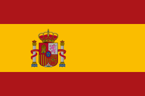

Испа́ния (исп. España, МФА: [esˈpaɲa]), официально Короле́вство Испа́ния (исп. Reino de España, МФА: [ˈreino ðe esˈpaɲa]) — трансконтинентальное суверенное государство в Южной Европе, имеющее часть территорий в Африке (Канарские острова). По численности населения Испания 32-е государство в мире (48 196 693 человека на 1 апреля 2023 года)[4]. Состав населения Испании по вероисповеданию по состоянию на 2023 год: не практикующие католики — 37,5 %, практикующие католики — 18,5 %, атеисты — 14,9 %, агностики — 12,6 %, неверующие / безразличные к религии — 12,3 %, верующие в другую религию или конфессию — 2,7 %, не ответили — 1,5 %[9]. Член Европейского союза и НАТО. Испания занимает бо́льшую часть (80 %) Пиренейского полуострова, а также Канарские и Балеарские острова, имеет общую площадь 504 782 км² (вместе с небольшими суверенными территориями на африканском побережье, городами Сеута и Мелилья), являясь четвёртой по величине страной в Европе (после России, Украины и Франции). Омывается Атлантическим океаном на севере и западе, Средиземным морем на юге и востоке. Средняя высота поверхности Испании — 650 м над уровнем моря; она является одной из самых гористых стран Европы. Граничит с Францией, Андоррой и Португалией в Европе, и с Марокко в Северной Африке. Территория разделена на 17 автономных сообществ и 2 автономных города. Столица — Мадрид.
Флаг Испании и видео с её красотами:
